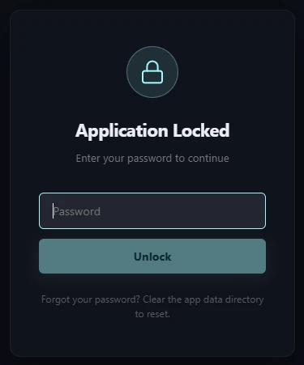

One client · six engines
Everything in one window
Query, visualize, compare, tune and secure your databases — without juggling five different tools.
Six engines, one client
SQL Server, PostgreSQL, MySQL, SQLite, MongoDB and Redis — all connected in a single explorer tree.
Local AI assistant
SQLCoder 7B runs on your machine. Generate SQL from plain English — nothing ever leaves your device.
Instant ERDs
Generate entity-relationship diagrams from any schema and understand complex structures at a glance.
Schema & data compare
Diff two databases, generate sync scripts and apply changes safely — per-finding or all at once.
Plans & statistics
Visualize query execution plans and client statistics to find and fix slow queries fast.
Environments & guards
Tag connections Production, QA or Dev with color-coded risk levels and confirmation safeguards.
Local-first & locked
Password-protect the app with auto-lock. No account, no cloud — everything stays on your device.
Built for power users
Redis dashboards, Mongo shell, user & role management, backups, execution checklists, themes & i18n.
See your whole schema on one canvas
Generate an interactive ERD in seconds. Pan, zoom and rearrange tables, follow relationships, drop annotations, and export the diagram to share with your team.
Diff databases, then sync with confidence
Compare schema and data across connections. Spiral reports what was added, removed and modified, generates sync scripts, and can apply changes per-finding or all at once — with an optional revert script.
Live dashboards for Redis & more
Auto-refreshing dashboards surface memory, cache efficiency, persistence and replication at a glance. Drop into the MongoDB shell, manage users and roles, and back up databases — without leaving Spiral.
Make it yours
Three handcrafted themes — Neon Dark, Glass Light and Solar Light — plus System Sync. Switch instantly.
Neon Dark
Glass Light
Solar Light

Your data stays yours
No account. No cloud sync. Connections, credentials and AI all live locally on your machine. Lock the app with a password and auto-lock on idle, startup or minimize.
- Everything stored locally — never sent anywhere.
- Password lock with auto-lock on idle, startup & minimize.
- Anonymous analytics only, off with a single toggle.
Download Spiral
Free, open source and ready for your platform. Pick your OS to grab the latest release.
{{ version }} · Free & open source · View all releases on GitHub →